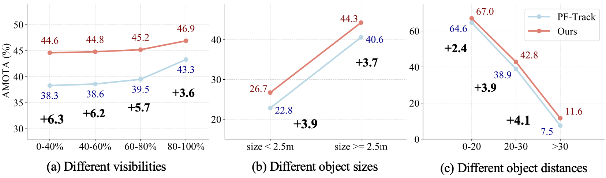
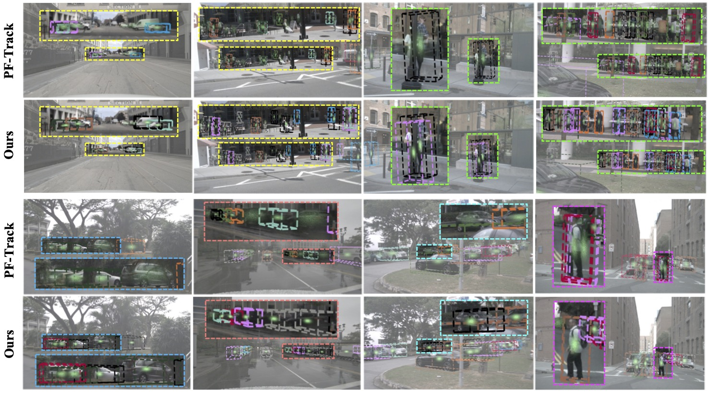

The uncertainty issue in 3D multiple object tracking. The uncertainty issue refers to the models that do not provide accurate certainty estimates. In complex driving scenarios, the uncertainty issue arises from various factors, especially the occlusions and small size of target objects, which present significant challenges to achieving accurate tracking. The previous state-of-the-art end-to-end tracker, PF-Track, lacking uncertainty modeling, fails to track objects in certain complex scenarios
3D multiple object tracking (MOT) plays a crucial role in autonomous driving perception. Recent end-to-end query-based trackers simultaneously detect and track objects, which have shown promising potential for the 3D MOT task. However, existing methods overlook the uncertainty issue, which refers to the lack of precise confidence about the state and location of tracked objects. Uncertainty arises owing to various factors during motion observation by cameras, especially occlusions and the small size of target objects, resulting in an inaccurate estimation of the object's position, label, and identity. To this end, we propose an Uncertainty-Aware 3D MOT framework, UA-Track, which tackles the uncertainty problem from multiple aspects. Specifically, we first introduce an Uncertainty-aware Probabilistic Decoder to capture the uncertainty in object prediction with probabilistic attention. Secondly, we propose an Uncertainty-guided Query Denoising strategy to further enhance the training process. We also utilize Uncertainty-reduced Query Initialization, which leverages predicted 2D object location and depth information to reduce query uncertainty. As a result, our UA-Track achieves state-of-the-art performance on the nuScenes benchmark, i.e., 66.3% AMOTA on the test split, surpassing the previous best end-to-end solution by a significant margin of 8.9% AMOTA.
The UA-Track Framework. To model and capture the uncertainty in object prediction, we introduce an Uncertainty-aware Probabilistic Decoder (blue module). Moreover, we present an Uncertainty-guided Query Denoising strategy (green module) to enhance the model robustness and convergence against uncertainty of the training process. We also propose Uncertainty-reduced Query Initialization (yellow module) to improve the query initialization with reduced uncertainty The proposed Uncertainty-aware Probabilistic Decoder (UPD), Uncertainty-guided Query Denoising (UQD), and Uncertainty-reduced Query Initialization (UQI) are incorporated together to tackle the uncertainty issue.
Uncertainty-aware Probabilistic Decoder (UPD) architecture. The traditional cross-attention is upgraded with probabilistic attention to quantifying the uncertainty. The probabilistic attention utilizes a multi-layer perception that takes the query q and key k as input to generate the mean and standard deviation, which are used to form a Gaussian distribution. Subsequently, the attention value $\alpha$ is sampled from the constructed Gaussian distribution.
Qualitative results of our UQI. The initial queries generated by our UQI module accurately locate the regions of interest for the objects, resulting in more ac- curate tracking results.
Our UA-Track outperforms all existing camera-based 3D MOT methods in all metrics.
Our UA-Track surpasses the previous best solution by a significant margin of 8.9% AMOTA.
Uncertainty quantification results and ablations on the proposed modules of UA-Track. s and σ donate entropy and standard deviation, respectively. It is clear that incorporating each uncertainty-aware module facilitates the tackling of the uncertainty issue and leads to performance gain in tracking.
UA-Track consistently outperforms state-of-the-art tracker PF-Track under different uncertainty situations, especially under severe occlusions and small object size settings.
(a) The tracking results for an occlusion scenario of two pedestrians of consecutive frames (ti − ti+12), which are often encountered in real life. (b) The tracking results on several challenging tracking scenes with uncertainty, including the small size of vehicles and pedestrians (scene 1 and scene 2) and occlusions in spacious and crowded environments (scene 3 and scene 4). Moreover, we plot the attention scores of object queries, which indicate how strongly the model focuses on the target objects. A higher concentration of color represents a higher attention score and a stronger confidence in the corresponding object.
The tracking results on several challenging tracking scenarios with uncertainty, including the small size of the target objects and the occlusions. Moreover, we plot the attention scores of object queries, which indicate how strongly the model focuses on the target objects. A higher concentration of color represents a higher attention score and a stronger confidence in the corresponding object.
@article{zhou2024uatrack,
title={UA-Track: Uncertainty-Aware End-to-End 3D Multi-Object Tracking},
author={Lijun Zhou, Tao Tang, Pengkun Hao, Zihang He, Kalok Ho, Shuo Gu, Zhihui Hao, Haiyang Sun, Lijun Zhou, Kun Zhan,Peng Jia,Xianpeng Lang, Xiaodan Liang},
journal={arXiv preprint arXiv:xxxx.xxxxx},
year={2023}
}